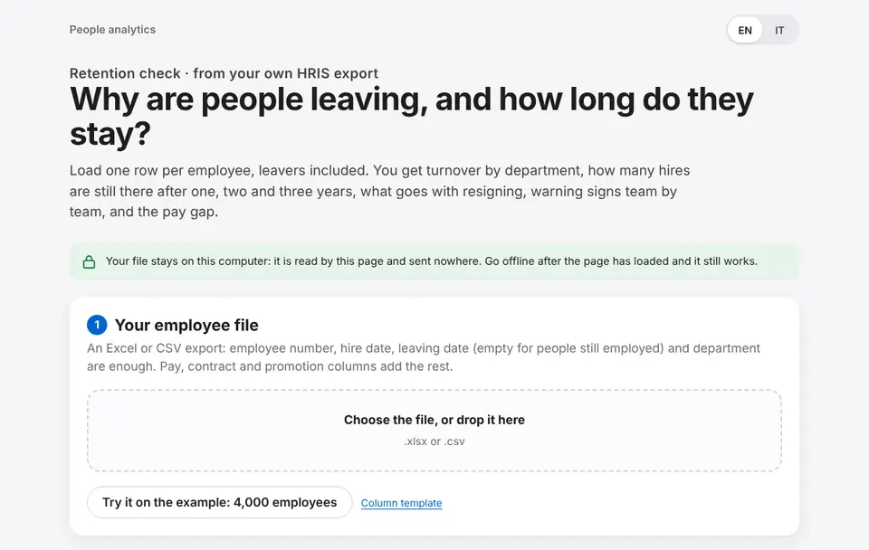

Chi se ne va, e può dirlo un modello?
Cliente: Un centro servizi condivisi di 4.000 dipendenti in Italia, Polonia, Germania e Spagna (dati sintetici), il cui HR vuole un modello di retention e deve decidere se può usarlo.
Chi se ne va e quando, un modello può avvisare in tempo, è equo, e cosa può farne l'HR secondo l'AI Act?

Cosa ho fatto
- Ho stimato un modello di attrition su un trimestre e l'ho applicato ai due successivi, mai visti, contro una checklist degli stessi segnali e il massimo raggiungibile sui dati.
- L'ho verificato per sesso, età, paese e orario, e ho scritto la sua scheda: le risposte del fornitore alle 14 domande che il registro AI Act pone a un sistema ad alto rischio.
- Ho misurato quanto restano le persone con l'analisi di sopravvivenza sull'anzianità, contando chi era già assunto dall'anzianità che aveva quando iniziano i dati.
- Ho consegnato uno strumento nel browser per l'export del gestionale HR, per reparto e mai per nome, e un file Excel riconciliato con Python.
Cosa ha trovato
- Quasi tutto il valore sta nel sapere quali segnali guardare: i pesi aggiungono 0,03 di AUC rispetto a contarli, e il modello copre l'84% della distanza tra il caso e il massimo.
- Il paese di lavoro non è tra gli ingressi, così la Germania è sovrastimata, 3,6% previsto dove si dimette il 2,2%. Correggerlo è una modifica sostanziale per l'AI Act: prima vengono gli obblighi del fornitore.
- Chi è pagato sotto la fascia resta 22,4 dei primi 36 mesi contro 31,3, con lo stesso effetto nel primo anno e dopo.
Con dati reali
- Ingressi presi com'erano a ogni data di calcolo, con la posizione in fascia che cambia a ogni aumento.
- Una decisione sull'engagement: il punteggio individuale del sondaggio rompe la riservatezza che quasi ogni sondaggio promette.
Come è verificato. Statistica scritta da zero e verificata su risultati noti (AUC come Mann-Whitney, il test score di Cox come log-rank); lo strumento coincide con Python su 1.530 valori, l'Excel su 121, ricalcolato da LibreOffice nella CI.
Dati sintetici o pubblici; non è consulenza legale, retributiva o finanziaria. Cifre pubblicate il 24 novembre 2026. Domenico Perroni · consulenza HR, people analytics, retribuzioni · Kraków · d0m3n1c0x.github.io